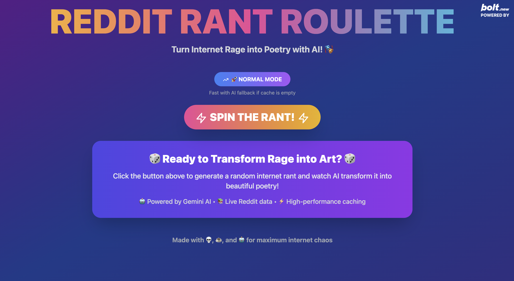
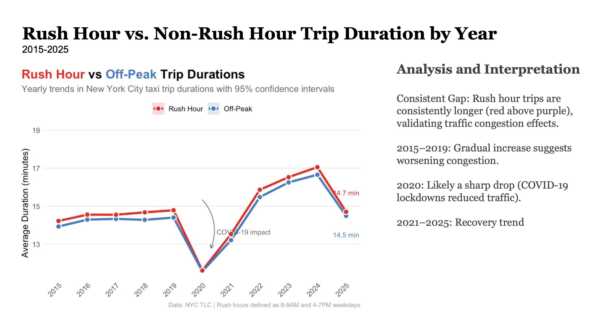

Projects

Reddit Rant Roulette
Full-stack AI app that turns Reddit rants into poems using a custom scraper, Gemini API, Flask, and React.

NYC Cab Analysis
Analyzed 30GB taxi data using R and HTCondor, revealing borough-specific travel insights and COVID impacts.

ATP and WTA Statistical Analysis and Modeling
Analyzed 2023 professional tennis match data to identify how age, height, and court surface influence win rates. Used R and ggplot2 to uncover gender-specific performance trends and built statistical models to support findings.